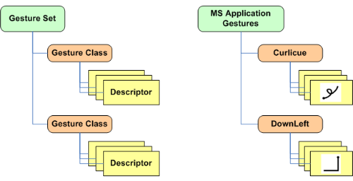

iGesture Data Structure
The figure below shows the simplified core data structure of iGesture. A
gesture class describes a gesture in an abstract manner. Multiple
gesture classes are taken together into gesture sets. Therefore, a
gesture set is a number of related gestures which are used by an
application.
The gesture descriptor is a concrete description of the gestures. A
gesture class should has at least one descriptor. The most used
descriptor is the SampleDescriptor. It is used for training based
algorithms (e.g. Rubine Algorithm) and is composed of a number of
samples.
The left side of the figure shows the abstract data structure. On the right
side a concrete example of a gesture set and its gesture classes and
descriptions is imaged.
